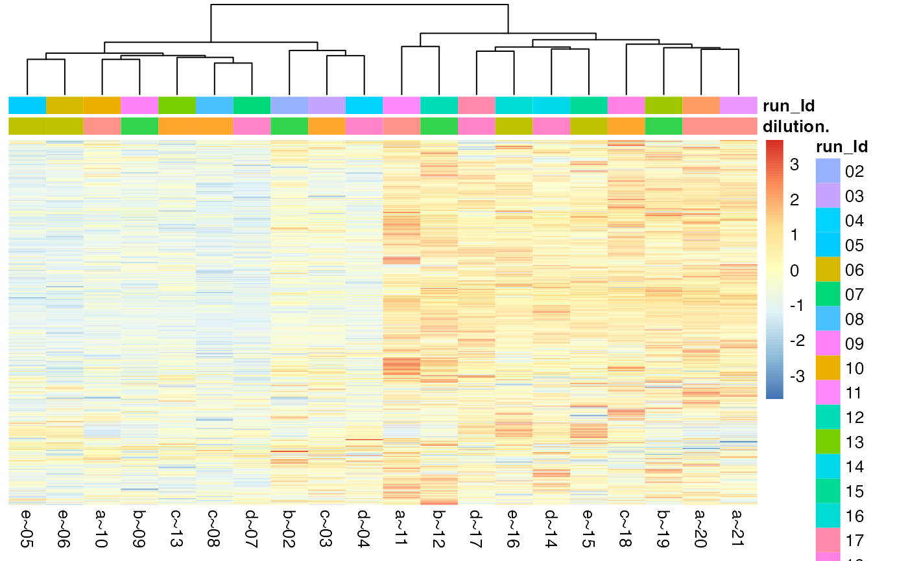

LFQData R6 class
LFQData R6 class
configAnalysisConfiguration
datadata.frame or tibble matching AnalysisConfiguration.
is_peptodo
prefixe.g. "peptide_", "protein_", "compound_"
new()initialize
LFQData$new(data, config, is_pep = TRUE, prefix = "ms_", setup = FALSE)datadata.frame
configconfiguration
is_peptodo
prefixwill be use as output prefix
setupis data setup needed, default = FALSE, if TRUE, calls setup_analysis on data first.
remove_small_intensities()some software is reporting NA's as 0, you must remove it from your data
filter_proteins_by_peptide_count()remove proteins with less than X peptides
omit_NA()Omit NA from intensities per hierarchy (e.g. protein or peptide), idea is to use it for normalization For instance if a peptide has a missing value in more then nrNA of the samples within a condition it will be removed
complete_cases()some software is reporting NA's as 0, you must remove it from your data
summarize_hierarchy()e.g. number of peptides per protein etc
get_Stats()Get LFQDataStats. For more details see LFQDataStats.
LFQData$get_Stats(stats = c("everything", "interaction", "all"))filter_difference()get difference of self with other if other is subset of self
istar <- prolfqua_data('data_ionstar')
istar$config <- old2new(istar$config)
data <- istar$data |> dplyr::filter(protein_Id %in% sample(protein_Id, 100))
lfqdata <- LFQData$new(data, istar$config)
lfqdata$filter_proteins_by_peptide_count()
#> removing proteins with less than: 2 peptpides
#> Column added : nr_peptide_Id_IN_protein_Id
tmp <- lfqdata$to_wide()
tmp
#> $data
#> # A tibble: 813 × 22
#> protein_Id pepti…¹ `a~10` `a~11` `a~20` `a~21` `b~02` `b~09` `b~12` `b~19`
#> <chr> <chr> <dbl> <dbl> <dbl> <dbl> <dbl> <dbl> <dbl> <dbl>
#> 1 CON__P02769~… AEFVEV… 3.29e8 6.06e8 6.07e8 5.72e8 2.98e8 4.48e8 6.26e8 6.58e8
#> 2 CON__P02769~… DDPHAC… 1.81e8 2.33e8 2.31e8 2.27e8 1.86e8 1.74e8 2.73e8 2.18e8
#> 3 CON__P02769~… DDPHAC… 3.40e7 4.62e7 4.91e7 4.83e7 3.31e7 2.98e7 5.69e7 5.02e7
#> 4 CON__P02769~… ECCHGD… 8.05e6 1.30e7 1.48e7 1.27e7 1.12e7 9.86e6 1.44e7 1.19e7
#> 5 CON__P02769~… ETYGDM… 1.18e7 3.99e7 2.24e7 2.54e7 2.17e7 1.23e7 2.87e7 1.89e7
#> 6 CON__P02769~… EYEATL… 1.64e7 3.08e7 2.86e7 3.17e7 1.95e7 1.53e7 2.82e7 2.77e7
#> 7 CON__P02769~… FKDLGE… 8.31e8 1.18e9 1.45e9 1.62e9 9.71e8 9.16e8 1.50e9 1.44e9
#> 8 CON__P02769~… HLVDEP… 1.91e9 2.20e9 2.35e9 2.32e9 2.08e9 1.78e9 2.40e9 2.19e9
#> 9 CON__P02769~… HPEYAV… 4.41e7 6.28e7 4.71e7 6.38e7 4.90e7 6.99e7 5.70e7 7.28e7
#> 10 CON__P02769~… HPYFYA… 1.43e8 2.26e8 2.10e8 1.84e8 1.84e8 1.70e8 1.91e8 2.10e8
#> # … with 803 more rows, 12 more variables: `c~03` <dbl>, `c~08` <dbl>,
#> # `c~13` <dbl>, `c~18` <dbl>, `d~04` <dbl>, `d~07` <dbl>, `d~14` <dbl>,
#> # `d~17` <dbl>, `e~05` <dbl>, `e~06` <dbl>, `e~15` <dbl>, `e~16` <dbl>, and
#> # abbreviated variable name ¹peptide_Id
#>
#> $annotation
#> # A tibble: 20 × 3
#> sampleName dilution. run_Id
#> <chr> <chr> <chr>
#> 1 a~10 a 10
#> 2 a~11 a 11
#> 3 a~20 a 20
#> 4 a~21 a 21
#> 5 b~02 b 02
#> 6 b~09 b 09
#> 7 b~12 b 12
#> 8 b~19 b 19
#> 9 c~03 c 03
#> 10 c~08 c 08
#> 11 c~13 c 13
#> 12 c~18 c 18
#> 13 d~04 d 04
#> 14 d~07 d 07
#> 15 d~14 d 14
#> 16 d~17 d 17
#> 17 e~05 e 05
#> 18 e~06 e 06
#> 19 e~15 e 15
#> 20 e~16 e 16
#>
#> $rowdata
#> # A tibble: 813 × 2
#> protein_Id peptide_Id
#> <chr> <chr>
#> 1 CON__P02769~18~NA AEFVEVTK
#> 2 CON__P02769~18~NA DDPHACYSTVFDK
#> 3 CON__P02769~18~NA DDPHACYSTVFDKLK
#> 4 CON__P02769~18~NA ECCHGDLLECADDRADLAK
#> 5 CON__P02769~18~NA ETYGDMADCCEK
#> 6 CON__P02769~18~NA EYEATLEECCAK
#> 7 CON__P02769~18~NA FKDLGEEHFK
#> 8 CON__P02769~18~NA HLVDEPQNLIK
#> 9 CON__P02769~18~NA HPEYAVSVLLR
#> 10 CON__P02769~18~NA HPYFYAPELLYYANK
#> # … with 803 more rows
#>
#> $config
#> <AnalysisConfiguration>
#> Public:
#> clone: function (deep = FALSE)
#> initialize: function (analysisTableAnnotation, analysisParameter = AnalysisParameters$new())
#> parameter: AnalysisParameters, R6
#> sep: ~
#> table: AnalysisTableAnnotation, R6
#>
testthat::expect_equal(nrow(tmp$data) , nrow(tmp$rowdata))
testthat::expect_equal(ncol(tmp$data) , nrow(tmp$annotation) + ncol(tmp$rowdata))
stopifnot("data.frame" %in% class(tmp$data))
tmp <- lfqdata$to_wide(as.matrix = TRUE)
stopifnot("matrix" %in% class(tmp$data))
stopifnot(lfqdata$is_transformed()==FALSE)
dim(lfqdata$summarize_hierarchy())
#> [1] 65 3
# filter for missing values
f1 <- lfqdata$omit_NA(nrNA = 0)
#> completing cases
#> Joining, by = c("protein_Id", "peptide_Id")
stopifnot(f1$hierarchy_counts() <= lfqdata$hierarchy_counts())
f2 <- lfqdata$omit_NA(factorDepth = 0)
#> completing cases
#> Joining, by = c("protein_Id", "peptide_Id")
stopifnot(f2$hierarchy_counts() <= lfqdata$hierarchy_counts())
lfqdata$response()
#> [1] "peptide.intensity"
lfqdata$rename_response("peptide.intensity")
#> peptide.intensity already in data : protein_Id raw.file sampleName dilution. run_Id isotope peptide_Id peptide.intensity pep nr_peptide_Id_IN_protein_Id .
lfqdata$response()
#> [1] "peptide.intensity"
lfqdata$get_Plotter()$heatmap()

stopifnot("LFQData" %in% class(lfqdata$get_copy()))
stopifnot("LFQDataTransformer" %in% class(lfqdata$get_Transformer()))
stopifnot("LFQDataStats" %in% class(lfqdata$get_Stats()))
#> completing cases
#> completing cases
stopifnot("LFQDataSummariser" %in% class(lfqdata$get_Summariser()))
stopifnot("LFQDataPlotter" %in% class(lfqdata$get_Plotter()))
stopifnot("LFQDataWriter" %in% class(lfqdata$get_Writer()))
stopifnot("LFQDataAggregator" %in% class(lfqdata$get_Aggregator()))
lfqdata2 <- lfqdata$get_copy()
lfqdata2$data <- lfqdata2$data[1:500,]
res <- lfqdata$filter_difference(lfqdata2)
stopifnot(nrow(res$data) == nrow(lfqdata$data) - 500)
tmp <- lfqdata$get_sample(40, seed = 4)
#> Sampling 40protein_Id
#> Joining, by = "protein_Id"
stopifnot(nrow(tmp$hierarchy()) == 40)
lw <- lfqdata$get_Writer()
stopifnot(names(lw$get_wide()) %in% c("data", "annotation"))
stopifnot("data.frame" %in% class(lw$get_long()))